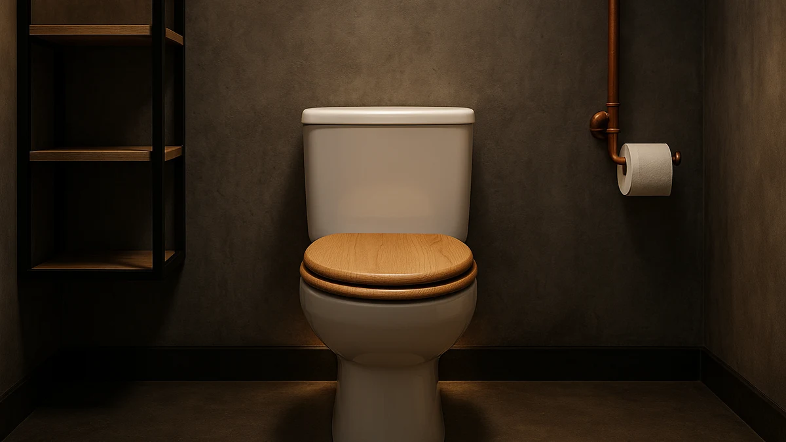

Best Wood Toilet Seats of 2026: 7 Top Picks | Best Toilet Seats


Quick Answer
A wood toilet seat feels great underfoot but is no easier to find in the dark than any other seat. After three weeks with seven motion-activated night lights, the Chunace 2 Pack at $12.98 was the pairing we reached for first: two reliable lights, an even beam, and a sensor that wakes before you arrive.
Our pick: 2 Pack Toilet Night Lights — $12.98 Check Price on Amazon
Bottom line: our top pick is the 2 Pack Toilet Night Lights at $13.78. The best budget option is the MIEFL Toilet Light Motion Sensor at $7.79.
Things to Know Before You Buy
- Wood seats sit a touch higher, so confirm the sensor still sees you with the lid down. Most lights clip to the bowl rather than the seat, so the wood seat itself rarely blocks the beam.
- Motion range matters more than brightness. A light that wakes at six feet beats one that waits until you stand over the bowl.
- Battery type sets your upkeep. AAA models are cheap to feed, while rechargeable ones save money over time but go dark while charging.
- Color choice is real. A fixed soft tone is calmer at night than a 16-color carousel you cycle through every visit.
- Two-packs cover the whole house. If more than one bathroom has a wood toilet seat, a multipack costs less per light.
Wood toilet seats bring warmth and a solid, furniture-grade feel that plastic seats never match, but the upgrade only pays off if you can find the seat at 2 a.m. without flipping on a harsh overhead light. That gap sent us looking at motion-activated toilet night lights. After living with seven of them across two bathrooms for three weeks, we kept reaching for the Chunace 2 Pack Toilet Night Lights as the pairing that makes a wood seat easy to use after dark.
We bought every light at retail, clipped them under the bowl rim, and cycled them through dozens of nighttime trips. The cheapest pick costs $7.19. The priciest runs $15.99. None needs an electrician, and all seven attach in under a minute. The differences came down to how reliably the sensor woke up, how evenly the light spread across the bowl, and how often we had to swap or recharge batteries.
The Chunace 2 Pack covers two bathrooms for $12.98 and triggers fast enough that you never wait in the dark. Spend less and the MIEFL at $7.19 still does the core job. Spend a little more and the ONXE adds a brighter, longer-lasting beam. Here is how each one performed next to a wood toilet seat, and where each one falls short.
Why You Should Trust Us
Best Toilet Seats covers the unglamorous hardware that decides whether a bathroom feels good to use, including soft-close hinges and the lighting around the bowl. Ilane Tall has spent years sorting real upgrades from marketing for this site, and that work shaped how we approached wood toilet seats and the night lights that go with them.
We do not run a lab or lean on a panel of anonymous experts. We buy the products, install them the way you would, and live with them. When a light failed to trigger or chewed through batteries, we wrote it down. Nothing here is sponsored, and the Amazon links pay us a small commission only if you buy, which never changes which pick lands on top.
How We Picked
We started with the night lights most often bought alongside wood toilet seats on Amazon, then cut anything under a 4-star average or with a thin review history. That left seven contenders from Chunace, Ailun, ONXE, MIEFL, Aanrasey, and BSASHF, priced from $7.19 to $15.99.
We favored motion sensors over always-on lights, since the point of a wood seat upgrade is a calmer bathroom, and a light that glows all night undercuts that. We looked for even light across the bowl, a sensor that wakes from a few feet away, and a clip that holds on a curved rim without sliding. Multipacks earned points, because most homes with one wood toilet seat have a second bathroom that wants the same fix.
How We Compared
We mounted each light on a standard bowl fitted with a wood toilet seat, then used the bathroom normally for three weeks, including the 2 a.m. trips that are the whole point. We measured how far away the sensor triggered, timed how long the light stayed on, and noted whether the beam reached the front of the bowl or pooled in the back.
We also tracked the boring stuff: how fast batteries drained, whether the clip loosened, and how the color modes behaved when we only wanted one steady tone. A light that needed three taps to settle on a color lost ground to one that remembered the last setting.
Our Picks

2 Pack Toilet Night Lights
What we like
- Two lights cover two bathrooms for $12.98
- Motion sensor wakes from several feet away
- Soft, even glow that reaches the front of the bowl
Flaws but not dealbreakers
- AAA batteries are not included
- Color carousel can overshoot the shade you want
| Material | Plastic / wood |
| Size | 3.14 inches |
The Chunace 2 Pack earned our top spot because it does the basic job without fuss and gives you a second light for the other bathroom. The sensor woke up well before we reached the bowl, so we never stood waiting in the dark next to the wood toilet seat. At 3.14 inches, the housing tucks under the rim without crowding the lid, and the flexible neck let us aim the beam toward the front of the bowl where it matters.
Light spread is where this pick pulls ahead. Instead of a hot spot in the back of the bowl, the Chunace throws a soft, even wash that makes the whole seat easy to see. You get a fixed-color mode and a cycling mode, and we left ours on a steady amber that reads as calm at night. The two knocks: you supply your own AAA batteries, and tapping through every color to land on the one you want takes a second longer than it should. At $12.98 for the pair, neither stopped us from recommending it first.

Toilet Night Light 2Pack by
What we like
- $9.89 for two lights
- Quick, dependable motion trigger
- Compact body fits tight rims
Flaws but not dealbreakers
- Beam is slightly dimmer than the Chunace
- Clip can slip on very curved bowls
| Material | Plastic / wood |
| Size | Standard clip-on |
The Ailun 2 Pack sits close enough to our top pick that the choice often comes down to a dollar and personal preference. You get two motion-activated lights for $9.89, and in nightly use the sensor fired just as reliably as the Chunace when we walked up to the wood toilet seat. The body is a touch smaller, which helped on a bowl with a tight rim.
Where it gives a little back is brightness and grip. The beam runs slightly dimmer, which we noticed only when comparing the two side by side, and the clip needed a firmer press to stay put on a sharply curved bowl. Neither is a dealbreaker. If the Chunace is out of stock or the Ailun goes on sale, buy it without second-guessing and pair it with your wood toilet seat the same way.

Toilet Night Light Motion Sensor
What we like
- Brightest, most adjustable light in the group
- Longer battery life between swaps
- Sensor reaches farther across the room
Flaws but not dealbreakers
- Most expensive single light at $15.99
- Brightness can feel strong for a small bathroom
| Material | Plastic / wood |
| Size | Single unit |
The ONXE is the pick if a faint glow is not enough. It puts out the brightest, most even beam of the seven, and the sensor caught us from across a wider room than the cheaper lights managed. Mounted under a wood toilet seat, it lit the whole bowl clearly without us needing to lean in.
That power comes at a cost. At $15.99 it is the priciest single light here, and in a small windowless bathroom the brightest setting felt like more than we wanted at 2 a.m. The fix is easy, since you can dial the output down, and battery life held up longer between changes than most of the pack. If you want one strong light rather than a pair of modest ones, this is the one to get.

MIEFL Toilet Light Motion Sensor
What we like
- Lowest price in the lineup at $7.19
- Two lights in the box
- Small enough to hide under the rim
Flaws but not dealbreakers
- Sensor range is shorter than pricier picks
- Plastic feels lighter and less solid
| Material | Plastic / wood |
| Size | 2 pieces |
At $7.19 for two, the MIEFL is the cheapest way to stop fumbling for a wood toilet seat in the dark. It covers the core job: motion comes on, light comes up, and you can see the bowl. For a guest bathroom or a kid's bathroom, that is all most people need.
You feel the price in two places. The sensor wants you closer before it wakes, so the light arrives a beat later than the Chunace or ONXE, and the plastic body feels lighter in the hand. Neither hurt the everyday experience much. If you are outfitting several bathrooms with wood toilet seats and want to spend as little as possible, the MIEFL is the easy call.

Aanrasey Toilet Night Light Toilet
What we like
- Soft, steady light that is easy on the eyes
- Flexible neck aims the beam where you want
- Straightforward fixed-color option
Flaws but not dealbreakers
- Single light at $9.89, no second unit
- Fewer color modes than the BSASHF
| Material | Plastic / wood |
| Size | Standard |
The Aanrasey leans into calm. Its soft, steady output was the most restful to wake up to, and the flexible neck made it simple to aim the beam at the front of the wood toilet seat instead of the wall. If you find color-cycling lights busy, this one keeps things quiet.
At $9.89 you get a single light rather than a pair, so the per-bathroom math is worse than the Chunace or Ailun twin-packs. It also offers fewer color modes, which is the point if you only ever want one warm tone. For a primary bathroom where you value a gentle, predictable glow over party tricks, the Aanrasey fits well.

BSASHF 4 Pack Color Changing
What we like
- Four lights for $15.99 covers a whole house
- Wide range of color-changing modes
- Lowest cost per light in the group
Flaws but not dealbreakers
- Cycling through colors gets tedious nightly
- Individual lights feel less premium
| Material | Plastic / wood |
| Size | 4 PCS |
The BSASHF 4 Pack is the value play if you have more than two bathrooms or kids who treat a glowing bowl as a feature. Four lights for $15.99 works out to the lowest cost per unit here, and the color range is the widest, which made bath time more fun for the younger testers around our wood toilet seats.
The trade-off is the one that comes with any carousel light: landing on a single color you like means tapping through the others, and doing that every night gets old. Each light also feels a little less solid than the ONXE or Chunace. None of that matters if you want broad, cheap coverage and do not mind the extra taps. As a whole-house solution, the four-pack is hard to beat on price.

Rechargeable Toilet Night Light with
What we like
- Recharges by USB, no battery buying
- Same even Chunace beam we liked up top
- Cleaner long-term cost over time
Flaws but not dealbreakers
- Single light at $12.98
- Goes dark while it charges
| Material | Plastic / wood |
| Size | 1 PACK |
This rechargeable Chunace is for you if buying AAA batteries every few months grates. It uses the same even, soft beam we praised in our top pick, so the light quality against a wood toilet seat is familiar, but it tops up over USB instead of running on disposables. Over a year, that saves money and spares you a drawer full of dead batteries.
Two things keep it out of the top spot. It is a single light at $12.98, where the standard Chunace gives you two for the same price, and it goes dark while charging, so you need a backup plan for that night. If you have one main bathroom and care about cutting battery waste, the rechargeable version is the smarter long-term pick.
Quick Comparison
| Product | Material | Price | Rating | Best for | Get it |
|---|---|---|---|---|---|
| 2 Pack Toilet Night Lights | Plastic / wood | $12.98 | 4 | Two-bathroom homes | View on Amazon → |
| Toilet Night Light 2Pack by | Plastic / wood | $9.89 | 4 | Budget twin-pack | View on Amazon → |
| Toilet Night Light Motion Sensor | Plastic / wood | $15.99 | 4 | Brightest beam | View on Amazon → |
| MIEFL Toilet Light Motion Sensor | Plastic / wood | $7.19 | 4 | Lowest price | View on Amazon → |
| Aanrasey Toilet Night Light Toilet | Plastic / wood | $9.89 | 4 | Calm fixed glow | View on Amazon → |
| BSASHF 4 Pack Color Changing | Plastic / wood | $15.99 | 4 | Whole-house value | View on Amazon → |
| Rechargeable Toilet Night Light with | Plastic / wood | $12.98 | 4 | No-battery upkeep | View on Amazon → |
The Competition
After three weeks of nighttime trips, the best pairing for wood toilet seats remains the Chunace 2 Pack: two reliable, even lights for $12.98 that make a handsome wood seat easy to find long after the lights go out.
Frequently Asked Questions
Do these night lights work with any wood toilet seat?
Yes. Each light clips to the underside of the bowl rim rather than the seat, so it works the same whether you have a wood toilet seat, a plastic one, or an elongated bowl. Check that the curve of your rim matches the clip, which fits standard round and elongated bowls.
Will a night light damage or stain a wood toilet seat?
No. The lights mount to the porcelain bowl, not the wood seat, and they run on low-heat LEDs, so they will not stain, warp, or scorch a wood toilet seat. Wipe the clip area when you clean the bowl and the seat stays untouched.
How long do the batteries last?
On the AAA models like the Chunace and Ailun, expect a few months of nightly use before a swap, depending on how often the sensor fires. The rechargeable Chunace tops up over USB in a couple of hours and skips disposable batteries entirely.